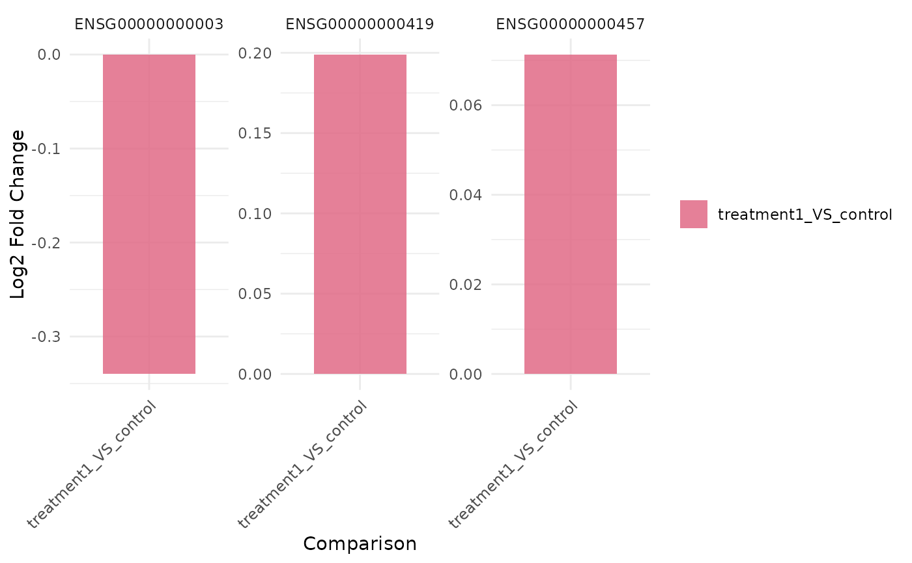
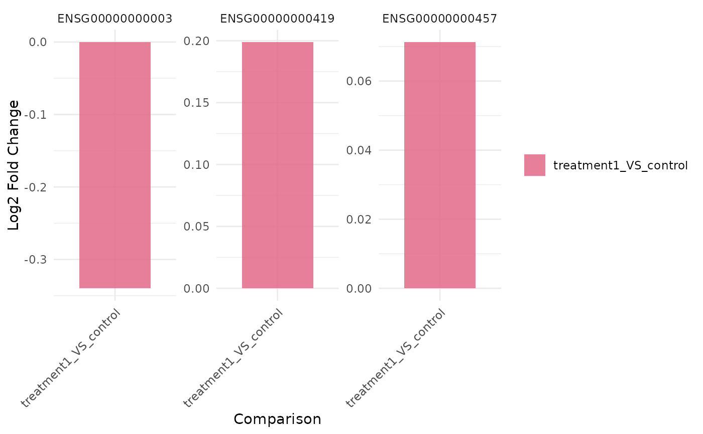

Plot fold-change barplots across comparisons for selected genes
get_foldchange_barplot.RdPlots log2 fold changes for selected genes across one or more comparisons.
facet_by provides an explicit, backward-compatible way to request
per-gene or per-comparison panels without changing the current
facet / facet_comparison defaults.
Usage
get_foldchange_barplot(
x,
genes,
sample_comparisons = NULL,
facet = TRUE,
coord_flip = FALSE,
display_id = NULL,
sort_by = c("input", "log2fc", "abs_log2fc"),
facet_comparison = FALSE,
facet_scales = "free_y",
facet_by = NULL
)Arguments
- x
A
VISTAobject containing differential expression results.- genes
Character vector of gene IDs to plot.
- sample_comparisons
Optional character vector of comparison names to include; defaults to all available.
- facet
Logical; facet by gene when
TRUE.- coord_flip
Logical; flip axes when
TRUE.- display_id
Optional column in
rowData(x)to use for gene labels. Input gene matching still usesgene_id.- sort_by
How to order genes when faceting:
"input"(use supplied order),"log2fc"(descending log2FC of the first comparison), or"abs_log2fc"(descending max absolute log2FC across comparisons).- facet_comparison
Logical; facet by comparison (x = gene) instead of faceting by gene (x = comparison).
- facet_scales
Facet scales argument passed to
facet_wrap()when faceting (default"free_y").- facet_by
Optional faceting mode. Use
NULL(default) to preserve the currentfacet/facet_comparisonbehavior. Otherwise choose one of"auto","gene","comparison", or"none".
Examples
NULL
#> NULL
data("count_data", package = "VISTA")
data("sample_metadata", package = "VISTA")
vista <- create_vista(
counts = count_data[1:200, ],
sample_info = sample_metadata[1:6, ],
column_geneid = "gene_id",
group_column = "cond_long",
group_numerator = "treatment1",
group_denominator = "control"
)
#> estimating size factors
#> estimating dispersions
#> gene-wise dispersion estimates
#> mean-dispersion relationship
#> final dispersion estimates
#> fitting model and testing
genes <- rownames(vista)[1:3]
get_foldchange_barplot(vista, genes = genes)

get_foldchange_barplot(vista, genes = genes, facet_by = "gene")
